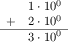
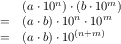
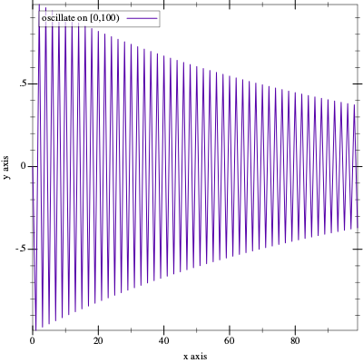

Интермеццо 4: Природа чисел
Когда дело доходит до чисел, языки программирования сокращают разрыв между аппаратным обеспечением и истинной математикой. Типичное компьютерное оборудование представляет числа с фрагментами данных фиксированного размера; эти фрагменты называются bits(битами) , bytes(байтами) и words(словами). они также поставляются с процессорами, которые работают именно с такими фрагментами. В вычислениях на бумаге и карандаше мы не беспокоимся о том, сколько цифр мы обрабатываем; в принципе, мы можем иметь дело с числами, которые состоят из одной цифры, 10 цифр или 10 000 цифр. Таким образом, если язык программирования использует числа из базового оборудования, его вычисления будут максимально эффективными. Если он придерживается чисел, которые мы знаем из математики, он должен преобразовать их в блоки данных оборудования и обратно, а эти переводы требуют времени. Из-за этой стоимости большинство создателей языков программирования выбирают аппаратное обеспечение.
Это интермеццо объясняет аппаратное представление чисел как упражнение в представлении данных. Конкретно, в первом подразделе вводится конкретное представление данных фиксированного размера для чисел, обсуждается, как отображать числа в это представление, и намекается, как вычисления работают с такими числами. Второй и третий разделы иллюстрируют две наиболее фундаментальные проблемы этого выбора: арифметическое переполнение и потеря значимости соответственно. В последнем показано, как работает арифметика на языках обучения; их система счисления обобщает то, что вы найдете в большинстве современных языков программирования. Последние упражнения показывают, насколько плохи могут быть вещи, когда программы вычисляют с помощью чисел.
Арифметика с числами фиксированного размера
Предположим, мы можем использовать четыре цифры для представления чисел. Если мы представляем натуральные числа, один представимый диапазон равен [0,10000). Для действительных чисел мы могли бы выбрать 10 000 дробей между 0 и 1 или 5000 от 0 до 1 и еще 5000 от 1 до 2 и так далее. В любом случае четыре цифры могут представлять не более 10 000 чисел для некоторого выбранного интервала, в то время как числовая строка для этого интервала содержит бесконечное количество чисел.
-
mantissa(мантисса), которая является основным числом, и
-
exponent(показатель степени), который используется для определения коэффициента на основе 10.
; N Number N -> Inex ; makes an instance of Inex after checking the arguments (define (create-inex m s e) (cond [(and (<= 0 m 99) (<= 0 e 99) (or (= s 1) (= s -1))) (make-inex m s e)] [else (error "bad values given")])) ; Inex -> Number ; converts an inex into its numeric equivalent (define (inex->number an-inex) (* (inex-mantissa an-inex) (expt 10 (* (inex-sign an-inex) (inex-exponent an-inex))))) Рисунок 143: Функции для неточных представлений
(define-struct inex [mantissa sign exponent]) ; An Inex is a structure: ; (make-inex N99 S N99) ; An S is one of: ; – 1 ; – -1 ; An N99 is an N between 0 and 99 (inclusive).
(create-inex 12 1 2)
> (create-inex 120 1 1) bad values given
> (create-inex 50 -1 20) (make-inex 50 -1 20)
> (create-inex 5 -1 19) (make-inex 5 -1 19)
(create-inex 12 1 2)
(create-inex 13 1 2)
(inex+ (create-inex 1 1 0) (create-inex 2 1 0)) == (create-inex 3 1 0)

(inex+ (create-inex 55 1 0) (create-inex 55 1 0)) == (create-inex 11 1 1)
(inex+ (create-inex 56 1 0) (create-inex 56 1 0)) == (create-inex 11 1 1)

(inex* (create-inex 2 1 4) (create-inex 8 1 10)) == (create-inex 16 1 14)
(inex* (create-inex 20 1 1) (create-inex 5 1 4)) == (create-inex 10 1 6)
(inex* (create-inex 27 -1 1) (create-inex 7 1 4)) == (create-inex 19 1 4)
Упражнение 412. Разработайте inex+. Функция складывает два представления Inexчисел с одинаковым показателем степени. Функция должна иметь возможность обрабатывать входные данные, увеличивающие показатель степени. Кроме того, она должна сигнализировать о своей ошибке, если результат выходит за пределы допустимого диапазона, а не полагаться на create-inex для проверки ошибок.
(check-expect (inex+ (create-inex 1 1 0) (create-inex 1 -1 1)) (create-inex 11 -1 1))
Упражнение 413. Разработайте inex*. Функция умножает два представления чисел Inex, включая входные данные, которые вызывают дополнительное увеличение экспоненты выходных данных. Как inex+, она должна сигнализировать о своей ошибке, если результат выходит за пределы допустимого диапазона, а не полагаться на create-inex для выполнения проверки ошибок.
Упражнение 414. Как показано в этом разделе, пробелы в представлении данных приводят к ошибкам округления, когда числа отображаются в Inexes. Проблема в том, что такие ошибки округления накапливаются в вычислениях..
Разработайте add, функцию, которая складывает n копий #i1/185. Для ваших примеров используйте 0 и 1; для последнего используйте допуск 0.0001. Каков результат для (add 185)? Чего бы вы ожидали? Что будет, если умножить результат на большое число?
Разработайте sub. Функция подсчитывает, сколько раз из аргумента можно вычесть 1/185, пока он не станет равным 0. Используйте 0 и 1/185 для своих примеров. Каковы ожидаемые результаты? Каковы результаты для (sub 1) и (sub #i1.0)? Что происходит во втором случае? Почему?
Overflow(Переполнение )
(inex+ (create-inex 50 1 99) (create-inex 50 1 99)) == (create-inex 100 1 99)
Когда происходит переполнение, некоторые языковые реализации сигнализируют об ошибке и останавливают вычисления. Другие обозначают некоторое символическое значение, называемое infinity(бесконечностью), для представления таких чисел и передают его с помощью арифметических операций.
Примечание. Если в Inexes есть знаковое поле для мантиссы, то два отрицательных числа могут составлять в сумме одно, настолько отрицательное, что оно также не может быть представлено. Это называется переполнением в отрицательном направлении. Конец
(expt #i10.0 n)
Underflow(потеря значений)
(inex* (create-inex 1 -1 10) (create-inex 1 -1 99)) == (create-inex 1 -1 109)
Когда происходит потеря значений, некоторые языковые реализации сигнализируют об ошибке; другие используют 0, чтобы приблизить результат. Использование 0 для аппроксимации потери значений качественно отличается от выбора приблизительного представления числа в Inex. Конкретно, приближение 1250 с помощью (create-inex 12 1 2) отбрасывает значащие цифры из мантиссы, но результат всегда находится в пределах 10% от числа, которое должно быть представлено. Однако приближение underflow(теряемых значений) означает отбрасывание всей мантиссы, что означает, что результат выходит за пределы предсказуемого процентного диапазона истинного результата.
Упражнение 416. ISL+ использует #i0.0 для приблизительного определения потери значимости. Определите наименьшее целое число n, такое, что (expt #i10.0 n) все еще является неточным числом ISL+, а (expt #i10. (- n 1)) аппроксимируется 0. Совет Используйте функцию для вычисления n. Попробуйте абстрагироваться от этой функции и решения упражнения 415.
*SL Числа
Большинство языков программирования поддерживают только приблизительное представление Неточные реальные представления бывают разных видов: float, double, extflonum и т. Д. чисел и арифметику чисел. Типичный язык ограничивает свои целые числа интервалом, который связан с размером ячеек(блоков) оборудования, на котором он работает. Его представление действительных чисел в общих чертах основано на эскизе из предыдущих разделах, хотя и с более крупными фрагментами, чем четыре цифры, которые использует Inex, и с цифрами из двухзначной(двоичной) системы счисления.
Языки обучения поддерживают как точные, так и неточные числа. Их целые и рациональные числа произвольно велики и точны, ограничены только абсолютным размером всей памяти компьютера. Для вычислений этих чисел наши языки обучения используют базовое оборудование до тех пор, пока задействованные рациональные числа вписываются в поддерживаемые блоки данных; они автоматически переключается на другое представление и на другую версию арифметических операций для чисел вне этого интервала. Их настоящие числа бывают двух видов: точные(exact) и неточные(inexact). Точное число действительно представляет собой действительное число; неточное число приближается к действительному числу в духе предыдущих разделов. По возможности арифметические операции сохраняют точность; при необходимости они дают неточный результат. Таким образом, sqrt возвращает неточное число как для точного, так и для неточного представления 2. Напротив, sqrt возвращает точное число 2, когда задано точное 4, и #i2.0 для ввода #i4.0. Наконец, числовая константа в обучающей программе понимается как точное рациональное число, если перед ней не стоит префикс #i.
Простой Racket интерпретирует все десятичные числа как неточные; он также отображает все действительные числа как десятичные, независимо от того, точны они или нет. Подразумевается, что все такие числа опасны, потому что они могут быть неточными приближениями к истинному числу. Программист может заставить Racket интерпретировать числа с точкой как точные, добавив к числовым константам префикса #e.
На этом этапе вы можете задаться вопросом, насколько результаты программы могут отличаться от истинных результатов, если в ней используются эти неточные числа. Это один из тех вопросов, над которым первые компьютерные ученые много боролись, и за последние несколько Для доступного введения - использования Racket - прочтите Practically Accurate Floating-Point Math(Практически точная математика с плавающей запятой), статья Нила Торонто и Джея Маккарти об анализе ошибок. Также интересно посмотреть лекцию Нила Торонто RacketCon 2011 года Debugging Floating-Point Math in Racket(Отладка математики с плавающей запятой в Racket), доступную на YouTube. десятилетий эти исследования создали отдельную область, называемую numerical analysis(численным анализом). Каждый ученый-компьютерщик, да и вообще каждый человек, использующий компьютеры и программное обеспечение, должен знать о его существовании и некоторых основных представлениях о работе числовых программ. Следующие упражнения на первый взгляд показывают, насколько все может быть плохо. Проработайте их, чтобы никогда не упускать из виду проблемы с неточными числами.
Упражнение 417. Вычислите (expt 1.001 1e-12) в Racket и ISL+. Объясните, что вы видите.
(define JANUS (list 31.0 #i2e+34 #i-1.2345678901235e+80 2749.0 -2939234.0 #i-2e+33 #i3.2e+270 17.0 #i-2.4e+270 #i4.2344294738446e+170 1.0 #i-8e+269 0.0 99.0)) Рисунок 144: Серия неточных чисел с лицом Януса
> (expt 2 #i53.0) #i9007199254740992.0
> (sum (list #i1.0 (expt 2 #i53.0))) #i9007199254740992.0
> (sum (list #i1.0 #i1.0 (expt 2 #i53.0))) #i9007199254740994.0
(exact->inexact (sum (map inexact->exact JANUS)))
(define (oscillate n) (local ((define (O i) (cond [(> i n) '()] [else (cons (expt #i-0.99 i) (O (+ i 1)))]))) (O 1)))

Рисунок 145: График oscillate
> (sum (oscillate #i1000.0)) #i-0.49746596003269394
> (sum (reverse (oscillate #i1000.0))) #i-0.49746596003269533
Вопрос в том, какие числа программисты должны использовать в своих программах, если у них есть выбор. Конечно, ответ зависит от контекста. В мире финансовой отчетности числовые константы следует интерпретировать как точные числа, и вычислительные операции с финансовой отчетностью должны опираться на сохраняющий точность характер математических операций. В конце концов, закон не может учесть серьезных ошибок, связанных с неточными числами и их действиями. Однако в научных вычислениях дополнительное время, необходимое для получения точных результатов, может оказаться слишком большим бременем. Поэтому ученые склонны использовать неточные числа, но тщательно анализируют свои программы, чтобы убедиться, что числовые ошибки допустимы для использования ими результатов программ.